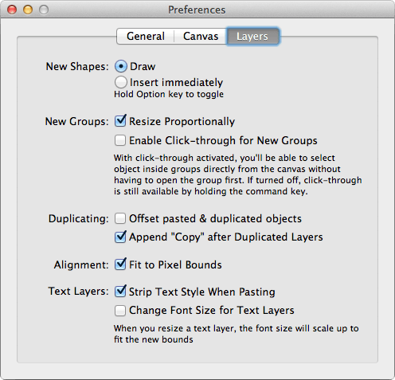
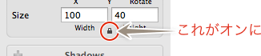
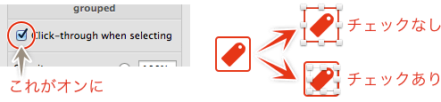
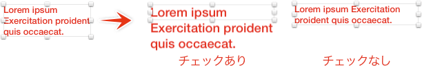

Sketch.app Advent Calender 2013 5日目の記事です。
今回はSketch.appの環境設定シリーズ最終回の「Layers」についてお届けします。
Sketchの基本。というSketch（Sketch 3）の基本操作にフォーカスした電子書籍をリリースしました。詳しくはこちらの「Sketchの基本。」のページをご覧ください。
この記事はSketch 2を元にした記事です。最新版の動作とは異なる可能性が高いため、参考程度にご覧ください。
Layersタブについて

「Layers」タブでは、レイヤー（オブジェクト）の描画に関する設定を行います。
New Shapes
「Draw」はシェイプを自分で描画します。「Insert immediately」はメニューやツールバーを選んだら、即時、決められたサイズのシャイプが挿入されます。
Optionキーを押しておくと、設定とは逆の動作にできます。
New Groups
Resize Proportionally
チェックしておくと、グループ化した際にインスペクタのサイズの下にある、鍵マークがオンになった状態になり、リサイズ時の縦横の比率を保ちます。

Enable Click-through for New Groups
これにチェックを入れると、グループ化した時にインスペクタの「Click-through when selecting」にチェックが入った状態になり、グループ内のオブジェクトをダイレクトに選択できるようになります。グループ内のグループオブジェクトがある場合、「Click-through when selecting」のオプションが有効であれば、さらにそのグループ内のオブジェクトもダイレクトに選択できます。

この「Click-through」オプションが有効のグループ全体の移動は、レイヤーリストで一度選択してからになりますので、グループというよりはフォルダーの感覚でオブジェクトをまとめる際に有効なオプションです。
また、このオプションの有効/無効に関わらずCommandを押しておけば、ダイレクトにオブジェクトを選択することができます。
Duplication
Offset pasted & duplicated objects
チェックを入れると、ペーストした同じ座標にオブジェクトがある場合、オフセットしてペーストされます。オフセットの距離はX:+10px/Y:+10pxです。
Append “Copy” after Duplicated Layers
チェックを入れると、レイヤー名に”Copy”と付きます。
Alignment
チェックを入れると、整列をした場合にピクセルをスナップさせ、ハーフピクセルができないようにします。
Text Layers
Strip Text Style When Pasting
チェックを入れると、スタイルの異なるテキストをペーストした際に、元のスタイル情報を削除してペーストします。Sketch.app内のテキストをペーストした場合は色情報が残ったままになりますが、外部アプリからコピペした場合はテキスト情報のみペーストされます。
Change Font Size for Text Layers
テキストレイヤーのボックスサイズを変更すると、そのボックスに合わせてフォントサイズが変更されます。

というわけで、環境設定シリーズは終了です。見直しはできましたでしょうか？